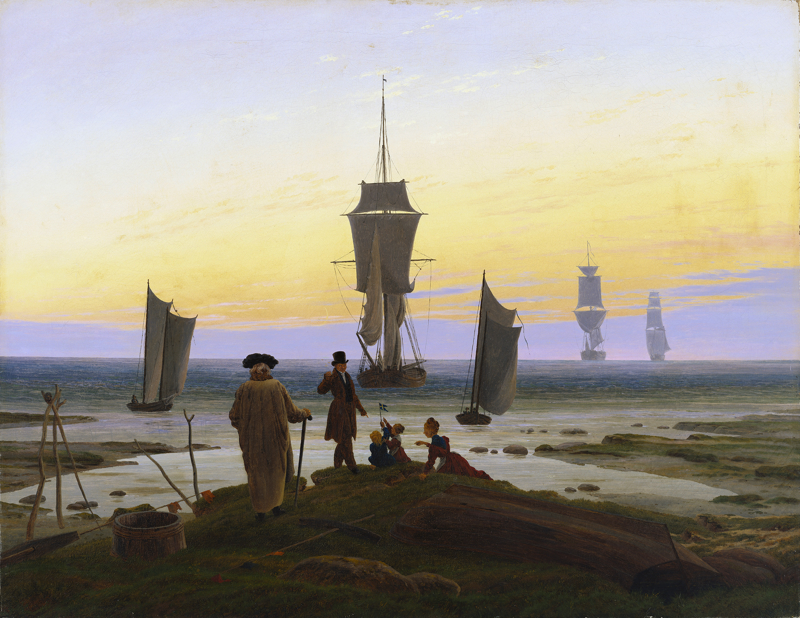
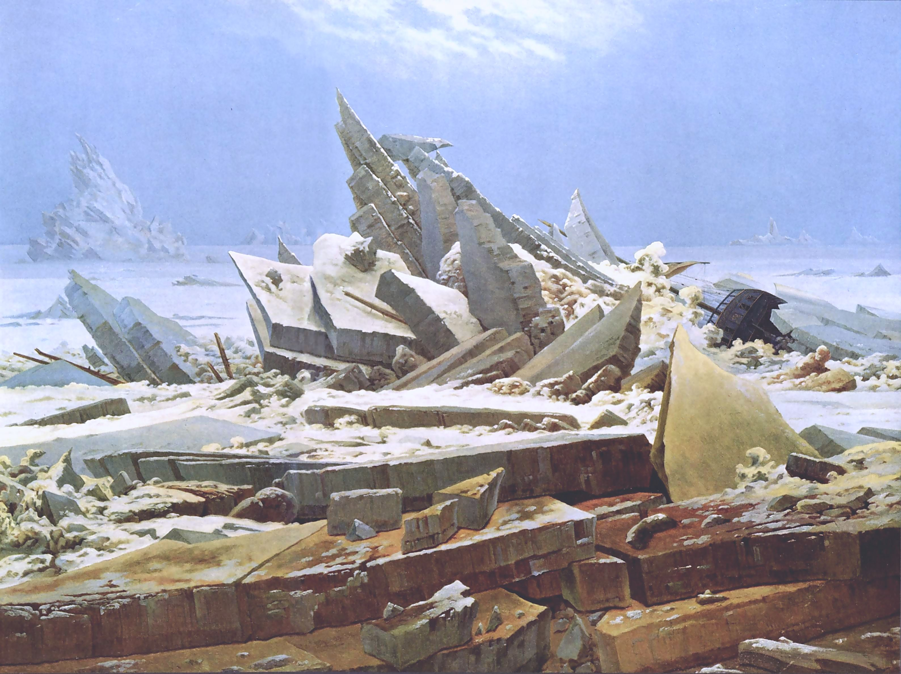
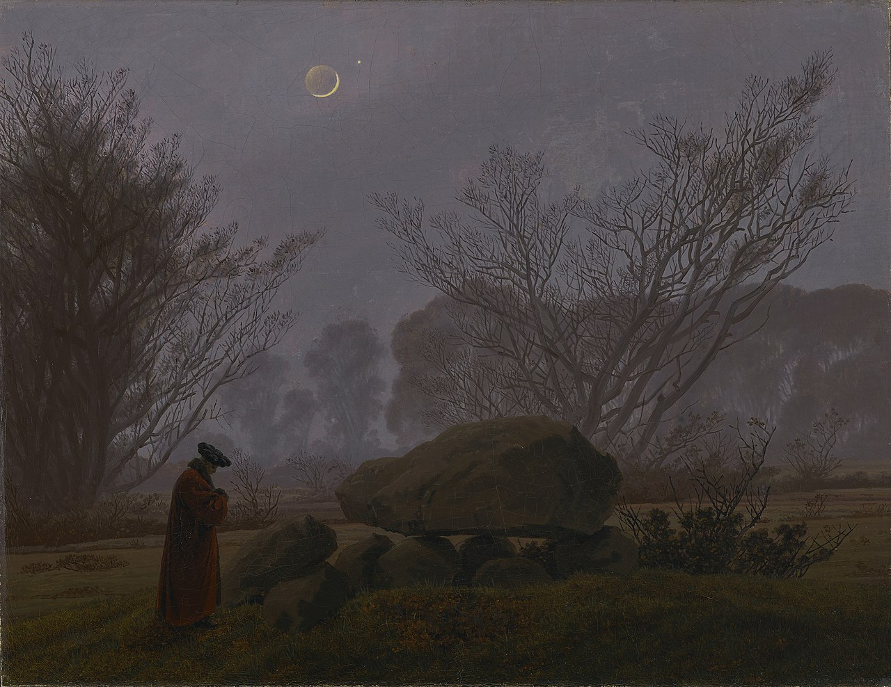

Caspar David Friedrich

Caspar David Friedrich (5 September 1774 – 7 May 1840) was a 19th-century German Romantic landscape painter, generally considered the most important German artist of his generation. He is best known for his mid-period allegorical landscapes which typically feature contemplative figures silhouetted against night skies, morning mists, barren trees or Gothic ruins. His primary interest was the contemplation of nature, and his often symbolic and anti-classical work seeks to convey a subjective, emotional response to the natural world. Friedrich's paintings characteristically set a human presence in diminished perspective amid expansive landscapes, reducing the figures to a scale that, according to the art historian Christopher John Murray, directs "the viewer's gaze towards their metaphysical dimension".
Friedrich was born in the town of Greifswald on the Baltic Sea in what was at the time Swedish Pomerania. He studied in Copenhagen until 1798, before settling in Dresden. He came of age during a period when, across Europe, a growing disillusionment with materialistic society was giving rise to a new appreciation of spirituality. This shift in ideals was often expressed through a reevaluation of the natural world, as artists such as Friedrich, J. M. W. Turner and John Constable sought to depict nature as a "divine creation, to be set against the artifice of human civilization".
Other works:
"The Stages of Life"
"Chalk Cliffs on Rügen"

"The Sea of Ice"
"Walk at Dusk"
